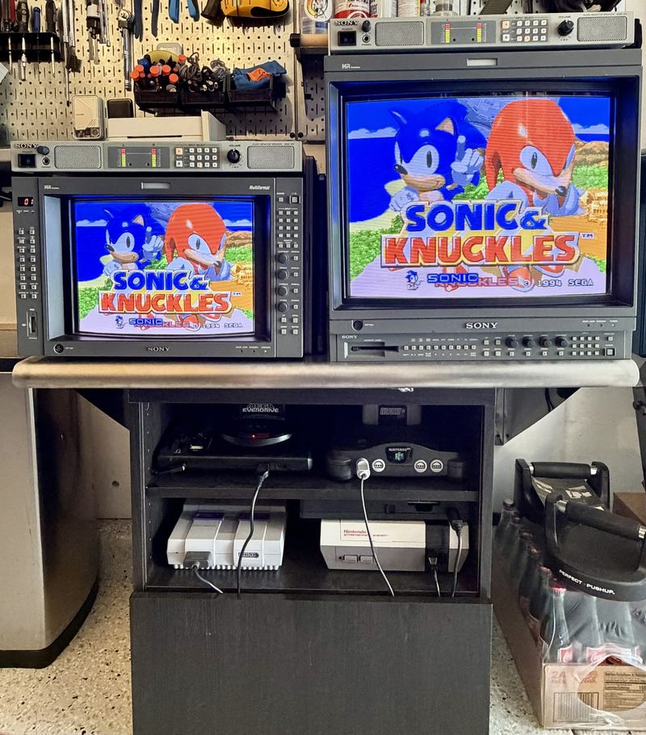

The Monitor Fleet
A working museum of Sony professional displays — broadcast BVMs, production PVMs, and the LMD generation that followed. Thirteen units across nine models, split between the garage arcade racks and the game room inside the house.
TRINITRON FLEET — the magazine
The full story of the fleet, told properly: an interactive magazine covering every chassis, the calibration work, and why these monitors matter. Future volumes will follow as the fleet evolves.
Read Vol. 1 →The fleet roster as of August 2026
| Model | Line | Units | Room | Notes |
|---|---|---|---|---|
| PVM-2950Q | PVM · production | 1 | Game room | The big 29-inch presence in the room |
| PVM-20L5 | PVM · production | 1 | Game room | Late-generation 20-inch multiformat |
| BVM-20E1U | BVM · broadcast | 1 | Garage arcade | Primary E/F-series chassis · BKM card hunt ongoing |
| BVM-A14F5U | BVM · broadcast | 1 | Garage arcade | Fully kitted — all three card slots filled |
| BVM-D9H5J | BVM · broadcast | 1 | — | Currently listed for sale |
| LMD-940W | LMD | 1 | Garage arcade | Widescreen 9-inch |
| LMD-9020 | LMD | 1 | Garage arcade | Zero-scan configured |
| LMD-9030 | LMD | ~5 | Garage arcade | The rack squadron · zero-scan configured |
| LMD-9050 | LMD | 3 | Garage arcade | Zero-scan configured |
Recently departed: a BVM-14F5U found a new home in August 2026. The fleet consolidates so the keepers get the attention they deserve.
Beyond video
The audio side of the rack
Four Sony AMS-100 units — three paired with CRT monitors, plus a rare dual-board configuration sourced from Japan. A written monograph on the AMS-100 is in the works.
The Japan pipeline
Much of the hard-to-find hardware arrives through years of sourcing from the Japanese market — auctions, contacts, and patience.
